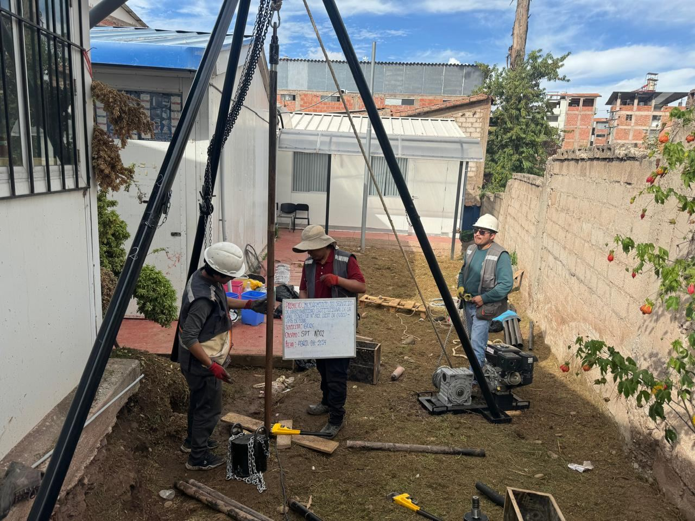

Ingeniería cusqueña con alcance nacional
Fundado en 2019 por un equipo de jóvenes ingenieros cusqueños, el laboratorio nace con el propósito de ofrecer servicios técnicos especializados en el control de calidad de materiales de construcción. Tras un proceso de consolidación, en 2026 alcanza un hito significativo al convertirse en el primer laboratorio acreditado de la región Cusco ante el INACAL, bajo los requisitos de la NTP ISO 17025:2017. El alcance de esta acreditación comprende los ensayos realizados en las matrices de suelo, concreto y medio ambiente, lo cual avala su competencia técnica y la confiabilidad de sus resultados.
Brindar servicios técnicos confiables y oportunos para todo tipo de proyectos y clientes, asegurando que los altos estándares de calidad se mantengan invariables en cada ensayo realizado.
Ser empresa estable, confiable y referente en el sur del país por compromiso, calidad profesional y experiencia.
Cuatro líneas de especialidad
Ingeniería geotécnica
Estudios de mecánica de suelos para cimentaciones, pavimentos, taludes, redes y riego. Diseño de mezclas, canteras, fuentes de agua y percolación.
Laboratorio de suelos y concreto
Ensayos de clasificación, especiales, agregados, químicos, concreto fresco y endurecido, morteros. Acreditación INACAL-DA.
Servicios geofísicos
Refracción sísmica, MASW, MAM-REMI, tomografía eléctrica ERT, sondeo eléctrico vertical y microtremores HVSR.
Medio ambiente y gestión social
Monitoreos de agua, aire, ruido y suelos. Instrumentos de gestión ambiental, biodiversidad, residuos sólidos y relaciones comunitarias.
Estudios de mecánica de suelos
Informes con análisis detallados, ensayos de laboratorio y recomendaciones constructivas, respaldados por acreditación INACAL-DA.

Suelos, concreto
y agregados
Contenido de humedad · Granulometría por tamizado · Límites de Atterberg · Clasificación SUCS y AASHTO
Proctor estándar y modificado · CBR · Corte directo · Consolidación · Triaxial · Permeabilidad · Límite de contracción
Abrasión Los Ángeles · Peso específico y absorción · Peso unitario · Equivalente de arena · Sales solubles · Partículas chatas · Durabilidad al sulfato
pH · Sales solubles totales · Materia orgánica · Sulfatos y cloruros · Reactividad álcali-sílice · Azul de metileno · Impurezas orgánicas
Slump · Temperatura · Peso unitario · Contenido de aire · Tiempo de fraguado · Elaboración y curado de especímenes
Rotura de probetas y testigos · Flexión de vigas · Tracción diametral · Módulo de elasticidad · Cubos de mortero · Fluidez
Ver el subsuelo sin excavarlo
Métodos no invasivos que brindan información continua del subsuelo para geotecnia, hidrogeología, minería, ingeniería civil y medio ambiente.
Cumplimiento ambiental y gestión social
Monitoreos ambientales
Calidad de agua: parámetros de campo, microbiológico, barrido de metales. Calidad de aire: PM10, PM2.5, meteorología. Ruido diurno y nocturno. Suelos.
Instrumentos de gestión
Preventivos: EVAP, DIA, EIAsd. Correctivos: DAA, DAAC, PAMA. Complementarios: ITS, planes de cierre, FTA, PAD.
Biodiversidad
Línea base biológica de flora, fauna e hidrobiología. Monitoreo biológico, caracterización de cuerpos de agua y asesoría en conservación.
Residuos sólidos
Estudio de caracterización y plan de manejo de residuos sólidos.
Minería y patrimonio
IGAFOM y plan de minado. Ministerio de Cultura: CIRAS, informe de reconocimiento arqueológico y diagnóstico de sitios culturales.
Gestión social y predial
Línea base socioeconómica, monitoreos participativos, mapeo de actores, plan de relaciones comunitarias y asesoría legal predial.

Conversemos
sobre su proyecto
San Sebastián, Cusco